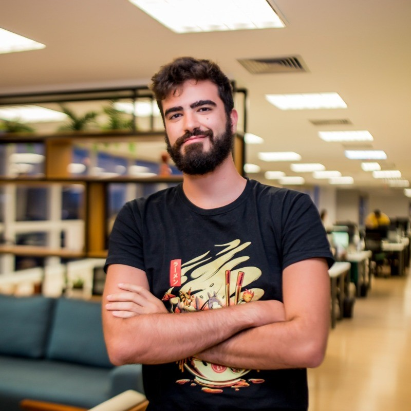
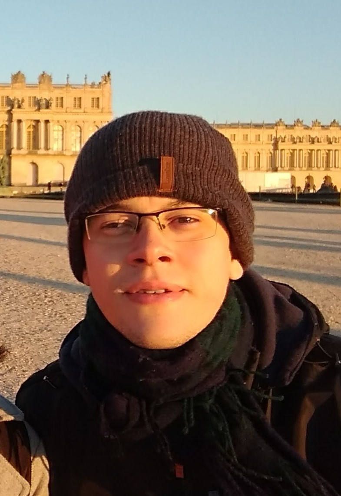

Equipo
Un equipo multidisciplinario unido por el compromiso con la revitalización lingüística y el respeto a las comunidades indígenas.
-
Fabrício Ferraz Gerardi
Lingüística Computacional
Doctor en Lingüística, máster en Lingüística Computacional, especialista en estructura del lenguaje. Investiga la documentación y revitalización de lenguas indígenas, con trabajo en Mato Grosso y alianzas con escuelas y universidades.
-

Gustavo Polleti
Ingeniería y Coordinación
Ingeniero con experiencia en aprendizaje automático e infraestructura tecnológica. Más de 6 años como ingeniero de aprendizaje automático en empresas como Nubank y Wildlife Studios. Líder técnico del proyecto.
-

Michel Correa da Silva
Director Escolar Indígena
Servidor público del Estado de Mato Grosso desde hace nueve años, con formación en Matemáticas Plenas y especialización en Ciencias de la Naturaleza y Matemáticas por el IFMT. Desde 2025, es Director de la Escuela Estatal Indígena Enawenê-Nawê.
-

Maria Eduarda Correr (Duda)
Pedagogía
Graduada en Letras - Portugués y Español (licenciatura y bachillerato) por la USP. Especialización en Neurociencia y Aprendizaje por la USP (PECEGE-USP). Investiga metodologías y prácticas pedagógicas con fundamentos neurocientíficos.
-

José Ícaro Bezerra Clemente
IA e Ingeniería ML
Arquitecto de soluciones de Inteligencia Artificial, especialista en prompt engineering. Especialista en modelos de lenguaje, RAG e infraestructura semántica.
-

Fernando Orphão de Carvalho
Lingüística/Antropología
Profesor del Sector de Lingüística del Departamento de Antropología del Museo Nacional de la UFRJ. Especialista en lingüística histórico-comparativa de las familias Tupi-Guaraní, Arawak y Carib de América del Sur.
-

Carolina Aragon
Lingüística Antropológica
Máster por la Universidad de Brasilia y doctora en Lingüística por la Universidad de Hawai'i. Profesora del Departamento de Lengua Portuguesa y Lingüística de la UFPB. Investigaciones lingüísticas y etnográficas con pueblos de las tierras bajas de la Amazonía.
-

Tiago Tresoldi
Lingüística Histórica Computacional/Análisis de Datos
Graduado en Letras por la Universidad Federal de Rio Grande (FURG) y por la Università di Pisa (UniPi), máster y doctor en Letras por la Universidad Federal de Rio Grande (FURG). Investigador afiliado al Departamento de Lingüística y Filología de la Universidad de Uppsala (Suecia).


Únete a nosotros
Siempre buscamos colaboradores comprometidos con la revitalización de lenguas indígenas. Ponte en contacto.